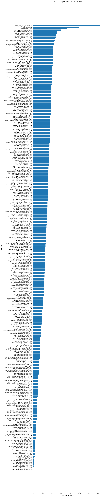
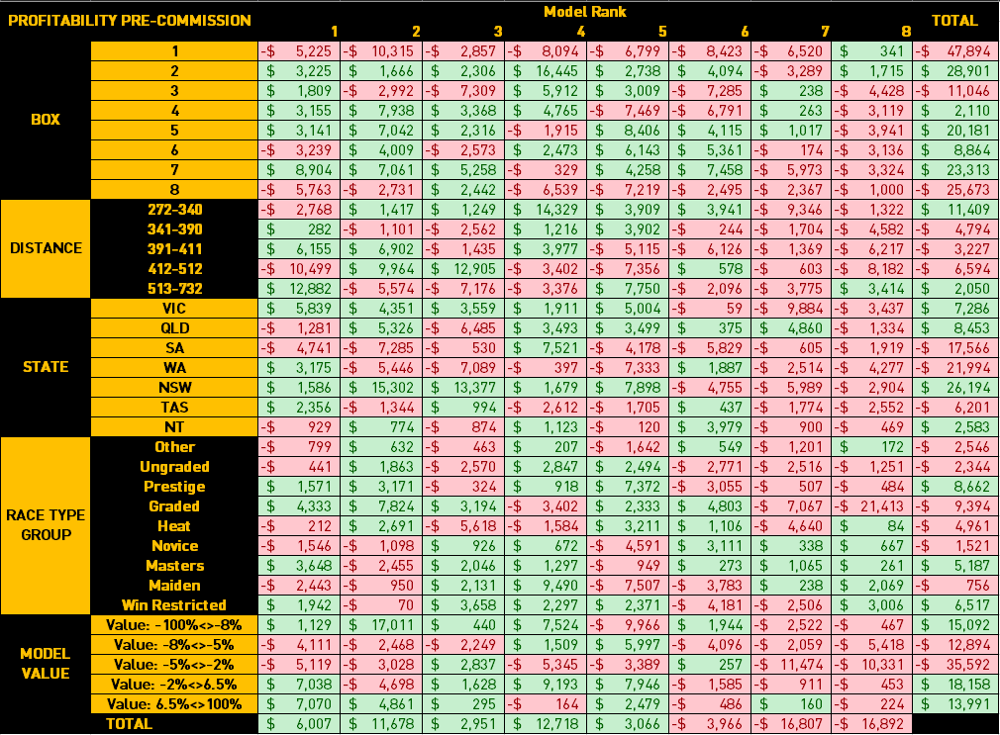

Greyhound Modelling in Python using the Topaz API
Building a greyhound racing model using Python and Machine Learning
This tutorial is a refreshed version of our previous tutorials utilising the new version of the FastTrack API (now called Topaz). Topaz is a product provided to Betfair Australia & New Zealand customers by Greyhound Racing Victoria (GRV).
If you would like your own Topaz API key, please contact us here. Access can only be provided to Betfair Australia or New Zealand customers with active accounts
Overview
This tutorial will walk you through the different steps required to generate Greyhound racing winning probabilities
- Download historic greyhound data from Topaz API
- Cleanse and normalise the data
- Generate features using raw data
- Build and train classification models
- Evaluate models' performances
- Evaluate feature importance
Requirements
- Coding environment which supports Jupyter Notebooks (e.g. Visual Studio Code)
- Betfair API Key. If you don't have one please follow the steps outlined on the The Automation Hub
- Topaz API Key. If you would like to be considered for a Topaz key, please email automation@betfair.com.au (Australian/New Zealand customers only).
- A screening call may be required for new accounts or accounts with no history of automated betting activity
- Python Topaz API wrapper. To install this package using pip, type 'pip install topaz_api' into your terminal
Historic Data
To get started on building our own Topaz model, first we need to download the historic data from the Topaz API. While we used to have to do this on a race level, it was painfully slow (with downloading a bulk dataset taking about 2-3 days). Now we're able to use a bulk data endpoint, to enable us to do this in minutes! The data goes back to January 2020 and is available as monthly or daily blocks up until today - 1 (i.e. yesterday). This won't work for upcoming races, but we'll look at that a bit later
import os
import pandas as pd
from topaz import TopazAPI
from datetime import datetime, timedelta
from dateutil.relativedelta import relativedelta
import time
# Constants
TOPAZ_API_KEY = ''
JURISDICTION_CODES = ['NSW', 'QLD', 'WA', 'TAS', 'NT', 'NZ', 'VIC', 'SA']
START_DATE = '2020-01-01'
today = datetime.today()
END_DATE = (today - timedelta(days=7)).strftime('%Y-%m-%d')
first_of_this_month = today.replace(day=1).strftime('%Y-%m-%d')
first_of_last_month = (today.replace(day=1) - relativedelta(months=1)).strftime('%Y-%m-%d')
def define_topaz_api(api_key):
return TopazAPI(api_key)
topaz_api = define_topaz_api(TOPAZ_API_KEY)
def generate_month_year_range(start_date, end_date):
dates = pd.date_range(start=start_date, end=end_date, freq='MS')
return [(date.year, date.month) for date in dates]
def generate_day_range(start_date, end_date):
dates = pd.date_range(start=start_date, end=end_date, freq='D')
return [(date.year, date.month, date.day) for date in dates]
def get_existing_bulk_data(csv_path):
if not os.path.isfile(csv_path):
return set(), set()
try:
# Extract owning authority code from filename
base_name = os.path.basename(csv_path)
owning_authority_code = base_name.split('_')[0]
# Read and parse meetingDate
df = pd.read_csv(csv_path, usecols=['meetingDate'], parse_dates=['meetingDate'])
# Create year, month, and day columns
df['year'] = df['meetingDate'].dt.year
df['month'] = df['meetingDate'].dt.month
df['day'] = df['meetingDate'].dt.day
# Generate sets
monthly_done = set((owning_authority_code, y, m) for y, m in zip(df['year'], df['month']))
daily_done = set((owning_authority_code, y, m, d) for y, m, d in zip(df['year'], df['month'], df['day']))
return monthly_done, daily_done
except Exception as e:
print(f"Error reading {csv_path}: {e}")
return set(), set()
def download_bulk_data(topaz_api, start_date, end_date, jurisdiction_codes):
for code in jurisdiction_codes:
csv_path = f"{code}_bulk_runs.csv"
file_exists = os.path.isfile(csv_path)
# Track completed months/days
monthly_done, daily_done = get_existing_bulk_data(csv_path)
# --- Monthly ---
for year, month in generate_month_year_range(start_date, first_of_last_month):
if (code, year, month) in monthly_done:
print(f"Skipping {code} {year}-{month:02d} (already downloaded)")
continue
success = False
retries = 0
max_retries = 5
while not success and retries < max_retries:
try:
data = topaz_api.get_bulk_runs_by_month(
owning_authority_code=code,
year=year,
month=month
)
if data.empty:
print(f"No data for {code} {year}-{month:02d}")
break
data.to_csv(csv_path, mode='a', index=False, header=not file_exists)
file_exists = True
print(f"Appended data for {code} {year}-{month:02d}")
success = True
except Exception as e:
error_msg = str(e).lower()
if '429' in error_msg or 'rate limit' in error_msg or 'timed out' in error_msg or 'timeout' in error_msg:
retries += 1
print(f"Retryable error for {code} {year}-{month:02d}: {e}. Retrying in 60 seconds... ({retries}/{max_retries})")
time.sleep(60)
else:
print(f"Non-retryable error for {code} {year}-{month:02d}: {e}")
break
# --- Daily ---
for year, month, day in generate_day_range(first_of_this_month, end_date):
if (code, year, month, day) in daily_done:
continue
success = False
retries = 0
max_retries = 5
while not success and retries < max_retries:
try:
data = topaz_api.get_bulk_runs_by_day(
owning_authority_code=code,
year=year,
month=month,
day=day
)
if data.empty:
print(f"No data for {code} {year}-{month:02d}-{day:02d}")
break
data.to_csv(csv_path, mode='a', index=False, header=not file_exists)
file_exists = True
print(f"Appended data for {code} {year}-{month:02d}-{day:02d}")
success = True
except Exception as e:
error_msg = str(e).lower()
if '429' in error_msg or 'rate limit' in error_msg or 'timed out' in error_msg or 'timeout' in error_msg:
retries += 1
print(f"Retryable error for {code} {year}-{month:02d}-{day:02d}: {e}. Retrying in 60 seconds... ({retries}/{max_retries})")
time.sleep(60)
else:
print(f"Non-retryable error for {code} {year}-{month:02d}-{day:02d}: {e}")
break
download_bulk_data(topaz_api, START_DATE, END_DATE, JURISDICTION_CODES)
NOTE: In the above code we have exported each state separately to its own csv file. This will keep each file under a million rows ensuring that you can manually inspect the data by opening the file in Excel. This is not required (we will pull in each file to our model before we begin to process the data)
Cleaning the data
When calling a function that we have defined with arguments, we will need to pass parameters into the function for it to run. The parameter names don't necessarily need to match between the function definition and the function call, because it will use the position of the parameter for this purpose. However, the data types should match, otherwise the function may fail. (i.e. don't pass a 'string parameter' into a function where a 'list' is expected)
This is what the data may look like once exported
[
{ "trackCode":"GAW" },
{ "track":"Gawler" },
{ "distance":"531" },
{ "raceId":"184204888" },
{ "meetingDate":"2017-01-01T00:00:00.000Z" },
{ "raceTypeCode":"6" },
{ "raceType":"Grade 6" },
{ "runId":"184931091" },
{ "dogId":"641470451" },
{ "dogName":"CHANCE IT" },
{ "weightInKg":"26.4" },
{ "incomingGrade":"5" },
{ "outgoingGrade":"5" },
{ "gradedTo":"Field" },
{ "rating":"89" },
{ "raceNumber":"6" },
{ "boxNumber":"8" },
{ "boxDrawnOrder":"" },
{ "rugNumber":"8" },
{ "startPrice":"18" },
{ "place":"1" },
{ "unplaced":"" },
{ "unplacedCode":"" },
{ "scratched":"FALSE" },
{ "prizeMoney":"630" },
{ "resultTime":"31.73" },
{ "resultMargin":"0.0035" },
{ "resultMarginLengths":"0.25L" },
{ "startPaceCode":"" },
{ "jumpCode":"" },
{ "runLineCode":"" },
{ "firstSecond":"BOPA ALLEN" },
{ "colourCode":"BK" },
{ "sex":"Bitch" },
{ "comment":"" },
{ "ownerId":"2069410086" },
{ "trainerId":"-146035" },
{ "ownerName":"Bewley Hosking" },
{ "ownerState":"SA" },
{ "trainerName":"Kevin Bewley" },
{ "trainerSuburb":"Lewiston" },
{ "trainerState":"SA" },
{ "trainerDistrict":"" },
{ "trainerPostCode":"5501" },
{ "isQuad":"" },
{ "isBestBet":"" },
{ "damId":"-390299" },
{ "damName":"TA TA" },
{ "sireId":"-339746" },
{ "sireName":"MAGIC SPRITE" },
{ "dateWhelped":"2013-08-08T00:00:00.000Z" },
{ "totalFormCount":"0" },
{ "last5":"4-2-6-2-3" },
{ "isLateScratching":"FALSE" },
{ "bestTime":"NBT" },
{ "bestFinishTrackAndDistance":"31.5" },
{ "pir":"0" },
{ "careerPrizeMoney":"8935" },
{ "averageSpeed":"63.885" },
{ "firstSplitPosition":"1" },
{ "firstSplitTime":"3.21" },
{ "secondSplitPosition":"1" },
{ "secondSplitTime":"16.32" }
]
def load_topaz_data(codes):
'''
This function here will loop over our previously written csv files and load them into one dataframe.
Due to the time taken to gather data from the Topaz API and the sheer size of the files, it makes sense to store the Topaz data locally as csv files locally rather than as a variable in the operating environment.
If the python kernel needs to be reset for whatever reason, all stored variables are lost - so storing the data in csv files means we can just load up the files directly rather than spending another 24 hours re-downloading all the data
'''
# initialise the dataframe
TopazDataAll = pd.DataFrame()
# loop over all csv files
for code in codes:
# Read the csv force two columns into datetime format
try:
StateData = pd.read_csv(code+'_bulk_runs.csv',low_memory=False,parse_dates=['meetingDate','dateWhelped'])
except FileNotFoundError:
pass
# Add the state as a column
StateData['state']=code
# Concatenate the dataframes
TopazDataAll = pd.concat([TopazDataAll,StateData])
return TopazDataAll
'''
Because this new function returns a dataframe as the output, we need to define the output of the function as a named variable. This name can be different to the name of the variable named after the 'return' operation.
Simply calling the function without assigning the output as a variable will result in the function's output not being defined which will affect our downstream operations.
'''
TopazDataAll = load_topaz_data(JURISDICTION_CODES)
def discard_using_dates(TopazData,start_date):
TopazData['meetingDateNaive'] = pd.to_datetime(TopazData['meetingDate'], format='%Y-%m-%dT%H:%M:%S.%fZ', utc=True).dt.tz_localize(None)
TopazData = TopazData[TopazData['meetingDateNaive'] >= datetime.strptime(start_date, '%Y-%m-%d') - relativedelta(years=1)]
return TopazData
TopazDataAll = discard_using_dates(TopazDataAll,START_DATE)
def discard_scratched_runners_data(TopazDataAll):
'''
This function will discard all scratched runners and abandoned races by dropping all rows where place = None
Note that this should only be done for past races, as upcoming races will also have place = None, because they have not been run yet, and so dropping these would remove all upcoming races
'''
# Discard scratched runners and abandoned races
TopazDataAll.dropna(subset=['place'], how='all', inplace=True)
return TopazDataAll
TOPAZ_COLUMNS_TO_KEEP = ['state',
'trackName',
'distanceInMetres',
'raceId',
'meetingDate',
'raceTypeCode',
'runId',
'dogId',
'dogName',
'weightInKg',
'gradedTo',
'rating',
'raceNumber',
'boxNumber',
'rugNumber',
'sex',
'trainerId',
'trainerState',
'damId',
'damName',
'sireId',
'sireName',
'dateWhelped',
'last5',
'pir',
'place',
'prizeMoney',
'resultTime',
'resultMargin']
def discard_unnecessary_columns(TopazDataAll,columns):
'''
This function serves to keep only the subset of columns that we will use for our model.
Columns have been discarded because:
- All entries are identical or null
- Entries are duplicates of another column - simply being abbreviated in this column
- Entries contain data leakage which is data that has been added after the race has been run and would not be available for a live model
- Significant amounts of missing data
Duplicate rows have also been discarded. These rows may exist if the collect_topaz_data function has been run for the same date more than once.
Each race a dog runs will have a unique runId which is why this column is ideal for identifying duplicates
'''
# Keep the required columns
TopazData = TopazDataAll[columns]
# Drop duplicate runIds
TopazData = TopazData.drop_duplicates(subset=['runId'])
# Reset the index
TopazData.reset_index(drop=True, inplace=True)
return TopazData
TopazDataAll = discard_scratched_runners_data(TopazDataAll)
TopazData = discard_unnecessary_columns(TopazDataAll,TOPAZ_COLUMNS_TO_KEEP)
# Let's correct the track names to align with Betfair names (Not all tracks in Topaz are on the exchange due to being closed or not hosting TAB-meetings)
# We're not using the NZ tracks in this tutorial, however they are included below for completeness
# The "Straight" tracks at Murray Bridge and Richmond are not differentiated on Betfair but we can treat these later.
TRACK_DICTIONARY= {
'Auckland (NZ)':'Manukau',
'Christchurch (NZ)':'Addington',
'Dport @ HOB':'Hobart',
'Dport @ LCN':'Launceston',
'Meadows (MEP)':'The Meadows',
'Otago (NZ)':'Forbury Park',
'Palmerston Nth (NZ)':'Manawatu',
'Sandown (SAP)':'Sandown Park',
'Southland (NZ)':'Ascot Park',
'Tokoroa (NZ)':'Tokoroa',
'Waikato (NZ)':'Cambridge',
'Wanganui (NZ)':'Hatrick',
'Taranaki (NZ)':'Taranaki',
'Ashburton (NZ)':'Ashburton',
'Richmond (RIS)':'Richmond',
'Murray Bridge (MBR)':'Murray Bridge',
'Murray Bridge (MBS)':'Murray Bridge'
}
def clean_track_data(TopazData,TrackDict):
'''
This function replaces the track names in Topaz with the track names as they are displayed on the Betfair Exchange.
This is important for performing our historical backtesting later on
'''
TopazData['trackName'] = TopazData['trackName'].replace(TrackDict)
return TopazData
TopazData = clean_track_data(TopazData,TRACK_DICTIONARY)
def correct_result_margin(TopazData):
'''
resultMargin has the same value for 1st and 2nd placed dogs, but should be 0 for the 1st placed dog.
This function simply replaces the entered value for resultMargin with 0 if the place value = 1
'''
# Replace margin to make sense for our model
TopazData.loc[TopazData['place'] == 1, ['resultMargin']] = 0
return TopazData
TopazData = correct_result_margin(TopazData)
Create the features
def generate_dogAge(TopazData):
'''
This function creates a dogAge variable by subtracting the race date from the dateWhelped (i.e. date of birth).
'''
# Ensure both columns are datetime
TopazData['meetingDate'] = pd.to_datetime(TopazData['meetingDate'], errors='coerce')
TopazData['dateWhelped'] = pd.to_datetime(TopazData['dateWhelped'], errors='coerce')
# Subtract dateWhelped from meetingDate
TopazData['dogAge'] = (TopazData['meetingDate'] - TopazData['dateWhelped']).dt.days
return TopazData
TopazData = generate_dogAge(TopazData)
LAST_FIVE_RACE_COLUMNS = ['posL1R', 'posL2R', 'posL3R','posL4R', 'posL5R']
def extract_form(TopazData):
'''
This function splits the last5 variable, which is a column of 5 characters or less that contain the dogs finishing position in the last 5 races.
First we define it as a string in order to extract all the characters, as some of them may be letters (e.g. F = Fell, D = Disqualified)
We then create five seperate columns for each race, and fill any blank cells with 10. Cells may be blank because the dog could have run fewer than 5 previous races.
We have chosen 10 as the padding value because a greyhound can never finish in 10th place owing to the maximum field size of 8 in greyhound racing.
'''
# Ensure variable is a string
TopazData['last5'] = TopazData['last5'].astype(str)
# Function to extract numbers from the 'last5' column
def extract_numbers(row):
try:
numbers = list(map(int, row.split('-')))
# If there are fewer than 5 numbers, pad with tens
numbers += [10] * (5 - len(numbers))
return numbers
except ValueError:
# Handle the case where the string cannot be split into integers
return [10, 10, 10, 10, 10]
# Apply the function to create new columns for each position
TopazData[LAST_FIVE_RACE_COLUMNS] = TopazData['last5'].apply(extract_numbers).apply(pd.Series)
return TopazData
TopazData = extract_form(TopazData)
def generate_winPercentage(TopazData):
'''
Generates the win and top-3 place percentage for a dog's last 5 races.
Win = number of 1st-place finishes / valid races
Top 3 = number of finishes in positions 1-3 / valid races
A race is invalid if the position is 10 (used to denote missing or non-existent race)
'''
valid_races = (TopazData[LAST_FIVE_RACE_COLUMNS] != 10).sum(axis=1)
TopazData['lastFiveWinPercentage'] = (TopazData[LAST_FIVE_RACE_COLUMNS] == 1).sum(axis=1) / valid_races
TopazData['lastFiveWinPercentage'] = TopazData['lastFiveWinPercentage'].fillna(0)
TopazData['lastFivePlacePercentage'] = (TopazData[LAST_FIVE_RACE_COLUMNS] <= 3).sum(axis=1) / valid_races
TopazData['lastFivePlacePercentage'] = TopazData['lastFivePlacePercentage'].fillna(0)
return TopazData
TopazData = generate_winPercentage(TopazData)
def generate_finishingPlaceMovement(TopazData):
'''
This function estimates if a dog tends to fall back or finish strong
by computing the difference between its final placing and its position
at the last recorded in-running point (2nd last character in 'pir').
'''
# Fill pir with place if pir is missing
TopazData['pir'] = TopazData['pir'].fillna(TopazData['place'])
TopazData['pir'] = TopazData['pir'].fillna(0).astype(str)
TopazData['pir'] = TopazData['pir'].str.replace('[fFTDPS.]', '8', regex=True)
# Extract second last character (last split before final placing)
TopazData['2ndLastPIR'] = TopazData['pir'].apply(lambda x: x[-2] if len(x) >= 2 else None)
# Fill missing '2ndLastPIR' values with 'place' first, then 8
TopazData['2ndLastPIR'] = TopazData['2ndLastPIR'].fillna(TopazData['place'])
TopazData['2ndLastPIR'] = TopazData['2ndLastPIR'].fillna(8)
# Convert to int
TopazData['2ndLastPIR'] = TopazData['2ndLastPIR'].astype(int)
# Calculate finishing movement: negative = strong finish, positive = faded
TopazData['finishingPlaceMovement'] = TopazData['2ndLastPIR'] - TopazData['place']
return TopazData
TopazData = generate_finishingPlaceMovement(TopazData)
def scale_values(TopazData):
'''
This function scales the 'dogAge' and 'weightInKg' columns based on the 'raceId' groups using Min-Max scaling.
Additionally, it applies logarithmic transformations to 'prizeMoney','place', and 'resultMargin' columns.
These transformations are performed to ensure that the data follows a more Gaussian distribution and meets the assumptions of certain statistical analyses.
'''
# Scale existing values using MinMaxScaler
TopazData['dogAgeScaled'] = TopazData.groupby('raceId')['dogAge'].transform(lambda x: MinMaxScaler().fit_transform(x.values.reshape(-1, 1)).flatten())
TopazData['weightInKgScaled'] = TopazData.groupby('raceId')['weightInKg'].transform(lambda x: MinMaxScaler().fit_transform(x.values.reshape(-1, 1)).flatten())
# Transform existing values using log functions
TopazData['prizemoneyLog'] = np.log10(TopazData['prizeMoney'] + 1)
TopazData['placeLog'] = np.log10(TopazData['place'] + 1)
TopazData['marginLog'] = np.log10(TopazData['resultMargin'] + 1)
return TopazData
TopazData = scale_values(TopazData)
def generate_runTimeNorm(TopazData):
'''
This function finds the rolling 365 day median win time for each track/distance combination by creating a dataframe that contains only winning runs.
The median time is compared to the dog's result time and normalised.
The clip(0.9, 1.1) ensures dirty data doesn’t overly skew the result.
'''
from sklearn.preprocessing import MinMaxScaler
# Filter winners
win_results = TopazData[TopazData['place'] == 1]
# Daily median winner times
grouped_data = win_results.groupby(['trackName', 'distanceInMetres', 'meetingDate'])['resultTime'].median().reset_index()
# Rolling 365-day median per track/distance
grouped = grouped_data.sort_values('meetingDate').groupby(['trackName', 'distanceInMetres'])
median_win_time = grouped['resultTime'].apply(
lambda x: x.shift(1).rolling('365D', min_periods=1).median()
).reset_index(name='runTimeMedian')
# Calculate speed index and scale
median_win_time['speedIndex'] = median_win_time['runTimeMedian'] / median_win_time['distanceInMetres']
median_win_time['speedIndex'] = MinMaxScaler().fit_transform(median_win_time[['speedIndex']])
# Merge into main dataframe
TopazData = TopazData.merge(median_win_time, on=['trackName', 'distanceInMetres', 'meetingDate'], how='left')
# Normalise time vs rolling median
TopazData['runTimeNorm'] = (TopazData['runTimeMedian'] / TopazData['resultTime']).clip(0.9, 1.1)
TopazData['runTimeNorm'] = TopazData['runTimeNorm'].fillna(1)
# Race-relative scaling
TopazData['runTimeNorm'] = TopazData.groupby('raceId')['runTimeNorm'].transform(
lambda x: MinMaxScaler().fit_transform(x.values.reshape(-1, 1)).flatten()
)
return TopazData
TopazData = generate_runTimeNorm(TopazData)
def generate_adjacentVacantBox_state(TopazData):
'''
Determines if a dog has at least one vacant adjacent box at the start of a race.
'''
# Ensure boxNumber is integer
TopazData['boxNumber'] = TopazData['boxNumber'].astype(int)
# Create a mapping: (raceId, boxNumber) → occupied
TopazData['occupied'] = 1
occupied_map = TopazData.set_index(['raceId', 'boxNumber'])['occupied']
# Check if (raceId, boxNumber ± 1) exist in the data (i.e., are occupied)
TopazData['left_occupied'] = (
TopazData.apply(lambda row: occupied_map.get((row['raceId'], row['boxNumber'] - 1), 0), axis=1)
)
TopazData['right_occupied'] = (
TopazData.apply(lambda row: occupied_map.get((row['raceId'], row['boxNumber'] + 1), 0), axis=1)
)
# Vacant = not occupied (i.e., 0)
TopazData['hasAtLeast1VacantBox'] = (
((TopazData['boxNumber'] == 1) | (TopazData['left_occupied'] == 0) | (TopazData['right_occupied'] == 0))
& (TopazData['boxNumber'] != 8) # box 8 is assumed to never have space on the outside
).astype(int)
# Clean up helper columns if you like
TopazData.drop(columns=['occupied', 'left_occupied', 'right_occupied'], inplace=True)
return TopazData
TopazData = generate_adjacentVacantBox_state(TopazData)
def generate_boxWinPercentage(TopazData):
'''
Creates a rolling win percentage by boxNumber & vacant box context.
Prevents data leakage using shift(1).
'''
# Create a binary win column
TopazData['win'] = (TopazData['place'] == 1).astype(int)
# Daily box win percentage
grouped = TopazData.groupby(['trackName', 'distanceInMetres', 'boxNumber', 'hasAtLeast1VacantBox', 'meetingDate'])['win'].mean().reset_index()
# Sort before rolling
grouped = grouped.sort_values('meetingDate')
# Group and apply rolling mean
box_win_percent = grouped.apply(
lambda x: x.set_index('meetingDate')['win'].shift(1).rolling('365D', min_periods=1).mean().reset_index(name='rolling_box_win_percentage')
).reset_index(drop=True)
# Merge result back into the main dataframe
TopazData = TopazData.merge(
box_win_percent[['trackName', 'distanceInMetres', 'boxNumber', 'hasAtLeast1VacantBox', 'meetingDate', 'rolling_box_win_percentage']],
on=['trackName', 'distanceInMetres', 'boxNumber', 'hasAtLeast1VacantBox', 'meetingDate'],
how='left'
)
return TopazData
TopazData = generate_boxWinPercentage(TopazData)
def fill_empty_pedigree_data(df):
df['sireId'] = df['sireId'].fillna(0)
df['damId'] = df['damId'].fillna(0)
return df
TopazData = fill_empty_pedigree_data(TopazData)
# Calculate values for dog, trainer, dam and sire
SUBSETS = ['dog', 'trainer', 'dam', 'sire']
# Use rolling window of 28, 91 and 365 days
ROLLING_WINDOWS = ['28D','91D', '365D']
# Features to use for rolling windows calculation
FEATURES = ['runTimeNorm', 'placeLog', 'prizemoneyLog', 'marginLog','finishingPlaceMovement']
# Aggregation functions to apply
AGGREGATES = ['min', 'max', 'mean', 'median', 'std']
def generate_rollingFeatures(topaz_data):
'''
This function generates rolling window features for subsets including dog, trainer, dam, and sire.
The rolling windows used are defined as 28 days, 91 days, and 365 days.
Features such as 'runTimeNorm','placeLog', 'prizemoneyLog', 'marginLog', and 'finishingPlaceMovement' are considered for rolling window calculation.
The aggregation functions applied include 'min', 'max', 'mean', 'median', and 'std'.
The function iterates through each subset, calculates rolling window features for each specified rolling window, and adds them to the dataset.
The generated feature names indicate the subset, feature, aggregation function, and rolling window used for calculation.
Finally, the function returns the dataset with generated features added and a list of column names representing the generated rolling window features.
The function enables the creation of a bulk set of features to be created using statistical aggregates, which will be entrusted to the algorithm to sort through which ones have significance
We create a copy of the topaz_data dataframe rather than modifying it directly in case of issues with this function. It means that this cell can simply be rerun instead of having to reload and reprocess the entire database
'''
# Create a copy of the dataframe and ensure meetingDate is in datetime format
dataset = topaz_data.copy()
dataset['meetingDate'] = pd.to_datetime(dataset['meetingDate'])
# Keep track of generated feature names
feature_cols = []
for i in SUBSETS:
# Add the Id string
idnumber = i + 'Id'
# Create a subset dataframe
subset_dataframe = dataset[['meetingDate',idnumber] + FEATURES]
# intitialise the dataframe
average_df = pd.DataFrame()
for feature in FEATURES:
# Find the mean value for the meetingDate
feature_average_df = subset_dataframe.groupby([idnumber, 'meetingDate'])[feature].mean().reset_index()
# Rename the feature column to indicate it's the average of that feature
feature_average_df.rename(columns={feature: f'{feature}{i}DayAverage'}, inplace=True)
# If average_df is empty, assign the feature_average_df to it
if average_df.empty:
average_df = feature_average_df
else:
# Otherwise, merge feature_average_df with average_df
average_df = pd.merge(average_df, feature_average_df, on=[idnumber, 'meetingDate'])
# Create a list from the column names
column_names = average_df.columns.tolist()
# Columns to exclude
columns_to_exclude = [idnumber,'meetingDate']
# Exclude specified columns from the list
column_names_filtered = [col for col in column_names if col not in columns_to_exclude]
# Drop any duplicate rows (for when any dam/sire has more than one progeny race in one day or an owner/trainer has more than one dog race in one day)
average_df.drop_duplicates(inplace=True)
# convert meetingDate to datetime format
average_df['meetingDate'] = pd.to_datetime(average_df['meetingDate'])
# set the index before applying the rolling windows
average_df = average_df.set_index([idnumber, 'meetingDate']).sort_index()
for rolling_window in ROLLING_WINDOWS:
print(f'Processing {i} rolling window {rolling_window} days')
rolling_result = (
average_df
.reset_index(level=0)
.groupby(idnumber)[column_names_filtered]
.rolling(rolling_window)
.agg(AGGREGATES)
.groupby(level=0)
.shift(1)
)
# Generate list of rolling window feature names (eg: RunTime_norm_min_365D)
agg_features_cols = [f'{i}_{f}_{a}_{rolling_window}' for f, a in itertools.product(FEATURES, AGGREGATES)]
# Add features to dataset
average_df[agg_features_cols] = rolling_result
# Keep track of generated feature names
feature_cols.extend(agg_features_cols)
# fill empty values with 0
average_df.fillna(0, inplace=True)
average_df.reset_index(inplace=True)
dataset = pd.merge(dataset,average_df,on=[idnumber, 'meetingDate'])
return dataset, feature_cols
dataset, feature_cols = generate_rollingFeatures(topaz_data)
from dateutil.relativedelta import relativedelta
def generate_feature_list(feature_cols):
'''
This function converts the numpy series to a list for later use
'''
feature_cols = np.unique(feature_cols).tolist()
return feature_cols
feature_cols = generate_feature_list(feature_cols)
DATASET_COLUMNS_TO_KEEP = [
'meetingDate',
'state',
'trackName',
'distanceInMetres',
'raceId',
'raceTypeCode',
'raceNumber',
'boxNumber',
'rugNumber',
'runId',
'dogId',
'dogName',
'weightInKg',
'sex',
'trainerId',
'trainerState',
'damId',
'damName',
'sireId',
'sireName',
'win',
'speedIndex',
'dogAgeScaled',
'lastFiveWinPercentage',
'lastFivePlacePercentage',
'weightInKgScaled',
'rolling_box_win_percentage',
'hasAtLeast1VacantBox']
def generate_modelling_dataset(dataset, feature_cols):
'''
This function extends the list of feature columns from the generate_rollingFeatures function by adding the features we previously created, and then keeps only the columns specified to prepare the dataset for training by the algorithm
'''
# Trim the dataset
dataset = dataset[DATASET_COLUMNS_TO_KEEP + feature_cols]
# Extend the feature_cols list
feature_cols.extend(['speedIndex',
'dogAgeScaled',
'lastFiveWinPercentage',
'lastFivePlacePercentage',
'weightInKgScaled',
'rolling_box_win_percentage',
'hasAtLeast1VacantBox'])
# Fill any missing values with 0 as a final step before training
dataset = dataset.fillna(0,inplace=True)
# Drop any duplicate runIds
dataset.drop_duplicates(subset=['runId'],inplace=True)
return dataset, feature_cols
discard_before_date = datetime.strptime(START_DATE, '%Y-%m-%d') + relativedelta(years=1)
dataset = discard_using_dates(dataset,discard_before_date)
dataset, feature_cols = generate_modelling_dataset(dataset, feature_cols)
Now that we've created our features, lets feed them into our Machine Learning Algorithm to generate some probabilities!
Training
from sklearn.ensemble import GradientBoostingClassifier
from sklearn.neural_network import MLPClassifier
from sklearn.neighbors import KNeighborsClassifier
from sklearn.tree import DecisionTreeClassifier
from sklearn.ensemble import RandomForestClassifier, AdaBoostClassifier
from sklearn.naive_bayes import GaussianNB
from sklearn.discriminant_analysis import QuadraticDiscriminantAnalysis
from sklearn.linear_model import LogisticRegression
# Gradient Boosting Machines libraries
from lightgbm import LGBMClassifier
from xgboost import XGBClassifier
from catboost import CatBoostClassifier
# Common models parameters
verbose = 0
learning_rate = 0.1
n_estimators = 500
def define_models():
'''
This function defines a number of machine learning algorithms with some suggested hyperparameters.
The purpose of this is to demonstrate the differences in accuracy as well as training times for each different algorithm specifically in relation to this dataset
'''
# Train different types of models
models = {
'GradientBoostingClassifier': GradientBoostingClassifier(verbose=verbose, learning_rate=learning_rate, n_estimators=n_estimators, max_depth=8, max_features=8),
'RandomForestClassifier': RandomForestClassifier(verbose=verbose, n_estimators=n_estimators, max_depth=20, max_features=8, min_samples_leaf=5,min_samples_split=10),
'LGBMClassifier': LGBMClassifier(learning_rate=learning_rate, n_estimators=n_estimators, force_col_wise=True,num_leaves=80,verbose=-1),
'XGBClassifier': XGBClassifier(verbosity=verbose, learning_rate=learning_rate, n_estimators=n_estimators, max_depth = 8, subsample = 1.0, objective='binary:logistic'),
'CatBoostClassifier': CatBoostClassifier(verbose=verbose, learning_rate=learning_rate, n_estimators=n_estimators, depth=8, l2_leaf_reg=10),
'KNeighborsClassifier': KNeighborsClassifier(n_neighbors=15,weights='distance',p=2),
'DecisionTreeClassifier': DecisionTreeClassifier(max_depth=20,min_samples_split=10,min_samples_leaf=5,max_features=8),
'MLPClassifier': MLPClassifier(hidden_layer_sizes=100,activation='relu',solver='adam', alpha=0.0001),
'AdaBoostClassifier': AdaBoostClassifier(n_estimators=n_estimators,learning_rate=learning_rate,algorithm='SAMME'),
'GuassianNB': GaussianNB(),
'QuadDiscriminantAnalysis': QuadraticDiscriminantAnalysis(),
'LogisticsRegression': LogisticRegression(verbose=0, solver='liblinear',max_iter=5000000, C=10,penalty='l2')
}
return models
models = define_models()
def remove_races(dataset):
'''
This function discards Qualifying Trials and any races which may only have 1 runner like Match Races which are outside the scope of this model
'''
#remove trial races
final_dataset = dataset[dataset['raceTypeCode'] != 'QT']
# Remove rows where raceId appears only once
counts = final_dataset['raceId'].value_counts()
repeated_raceIds = counts[counts > 1].index
final_dataset = final_dataset[final_dataset['raceId'].isin(repeated_raceIds)]
return final_dataset
final_dataset = remove_races(dataset)
def downcast_data(final_dataset):
'''
This function downcasts int64 and float64 to int32 and float32 respectively in order to reduce the memory usage of the model during the training process
For systems with high RAM capacity this may not be required. Feel free to comment out this function, however it may result in memory allocation failures
'''
# Loop through each column and convert int64 to int32 and float64 to float32
for col in final_dataset.columns:
if final_dataset[col].dtype == 'int64':
final_dataset.loc[:, col] = final_dataset[col].astype('int32')
elif final_dataset[col].dtype == 'float64':
final_dataset.loc[:, col] = final_dataset[col].astype('float32')
return final_dataset
final_dataset = downcast_data(final_dataset)
def train_test_split(final_dataset,end_date):
'''
This function splits the dataset into a training set and a test set for the purposes of model training.
This is to enable testing of the trained model on an unseen test set to establish statistical metrics regarding its accuracy
There are other ways to split a dataset into test and training sets, however this method is useful for the purposes of backtesting profitability
'''
final_dataset['meetingDateNaive'] = pd.to_datetime(final_dataset['meetingDate'], format='%Y-%m-%dT%H:%M:%S.%fZ', utc=True).dt.tz_localize(None)
# Split the data into train and test data
train_data = final_dataset[final_dataset['meetingDateNaive'] < datetime.strptime(end_date, '%Y-%m-%d') - relativedelta(years=1)].reset_index(drop=True)
test_data = final_dataset[final_dataset['meetingDateNaive'] >= datetime.strptime(end_date, '%Y-%m-%d')- relativedelta(years=1)].reset_index(drop=True)
train_data.drop(columns=['meetingDateNaive'], inplace=True)
test_data.drop(columns=['meetingDateNaive'], inplace=True)
return test_data, train_data
test_data, train_data = train_test_split(final_dataset,END_DATE)
def generate_xy(test_data, train_data, feature_cols):
'''
This function separates the target column 'win' from the actual features of the dataset and also seperates the training features from the race metadata which is not being used for the training (e.g. raceId)
'''
train_x, train_y = train_data[feature_cols], train_data['win']
test_x, test_y = test_data[feature_cols], test_data['win']
return train_x, train_y, test_x, test_y
train_x, train_y, test_x, test_y = generate_xy(test_data, train_data, feature_cols)
import pickle
from sklearn.metrics import log_loss
from sklearn.metrics import brier_score_loss
import time
def train_models(models,train_x, train_y, test_x, test_y, test_data):
'''
This function loads each individual machine learning algorithm and trains each model on the training dataset.
It begins by initialising an empty list and passing over each model by training it and then normalising the probabilities to 1 for each race field.
This normalisation could not be performed if a different method was used to generate the train/test split that resulted in incomplete race fields being included
Once normalised, then the log loss and brier score for each model is calculated and printed. These scores are not stored, merely displayed as indicators (along with the training time for each algorithm)
Finally the trained model (also called a pickle) is 'dumped' (i.e. saved) as a _pickle.dat file
'''
probs_columns = []
for key, model in models.items():
prob_col_key = f'prob_{key}'
print(f'Fitting model {key}')
# time and train the model
start_time = time.time() # Record start time
model.fit(train_x, train_y)
end_time = time.time() # Record end time
print(f"Training time for {key}: {end_time - start_time} seconds")
# Calculate runner win probability
dog_win_probs = model.predict_proba(test_x)[:, 1]
test_data[prob_col_key] = dog_win_probs
# Normalise probabilities
test_data[prob_col_key] = test_data.groupby('raceId', group_keys=False)[f'prob_{key}'].apply(lambda x: x / sum(x))
# Assign the dog with the highest probability a value of 1 as the predicted race winner
test_data['predicted_winner'] = test_data.groupby('raceId', group_keys=False)[f'prob_{key}'].apply(lambda x: x == max(x))
# Calculate log loss
test_loss = log_loss(test_y, test_data[prob_col_key])
print(f"Log loss for {key} on test data: {test_loss}")
# Calculate Brier Score
brier_score = brier_score_loss(test_y, test_data[prob_col_key])
print(f"Brier score for {key} on test data: {brier_score}")
# Add the probability column key to the list probs_columns
probs_columns.append(prob_col_key)
# Dump the pickle file
with open(key + '_.pickle', 'wb') as f:
pickle.dump(model, f)
return test_data, probs_columns
all_models_test_data, probs_columns = train_models(models,train_x, train_y, test_x, test_y, test_data)
BACKTESTING_COLUMNS = ['meetingDate','state','trackName','raceNumber','boxNumber','rugNumber']
def trim_and_export_test_data(all_models_test_data):
'''
This functions trims all the model features from the test dataset and outputs only the required the race information in addition to the win probability for each machine learning model to a csv file for the purposes of backtesting
'''
trimmed_test_data=all_models_test_data[BACKTESTING_COLUMNS + probs_columns]
trimmed_test_data.to_csv('multiple_algorithms_predictions.csv',index=False)
trim_and_export_test_data(all_models_test_data)
Alright, now that we've trained the models, let's have a look at the log loss calculations for each model and the time taken to train each model
| Model | Training Time | Log Loss | Brier Score |
|---|---|---|---|
| AdaBoostClassifier | 14287 | 0.7561 | 0.1367 |
| RandomForestClassifier | 4575 | 0.7495 | 0.1365 |
| GradientBoostingClassifier | 2799 | 0.7488 | 0.1364 |
| MLPClassifier | 2468 | 0.7464 | 0.1364 |
| Logistics Regression | 448 | 0.7466 | 0.1364 |
| CatBoostClassifier | 304 | 0.7453 | 0.1364 |
| XGBClassifier | 194 | 0.7494 | 0.1364 |
| LGBMClassifier | 144 | 0.7476 | 0.1364 |
| QuadDiscriminantAnalysis | 50 | 1.2495 | 0.1364 |
| DecisionTreeClassifier | 16 | 1.6094 | 0.1366 |
| GuassianNB | 8 | 1.5375 | 0.1364 |
| KNeighborsClassifier | 3 | 1.1889 | 0.1366 |
As we can see some models took a lot longer than others to train, with the longest being the AdaBoostClassifier taking close to 4 hours and KNeighbours Classifier at 3 seconds. We've only used one set of parameters for training each model. You could try using a GridSearch to find the best parameters for each model.
Here's a great explanation of the differences between log loss and Brier score for machine learning models - more info
import matplotlib.pyplot as plt
import numpy as np
def plot_feature_importance(models):
"""
This function iterates through each model in the provided dictionary and plots the feature importance if available.
If the model has a 'feature_importances_' attribute, it plots the feature importance either using 'plot_importance' method (if available) or a horizontal bar chart. Each plot is saved as a JPG file with a filename indicating the model name.
If a model does not have feature importance information, a message is printed indicating that.
"""
for key, model in models.items():
if hasattr(model, 'feature_importances_'):
plt.figure(figsize=(10, 70))
if hasattr(model, 'plot_importance'):
model.plot_importance(ax=plt.gca(), importance_type='gain', title=f'Feature Importance - {key}')
else:
feature_importance = model.feature_importances_
sorted_idx = np.argsort(feature_importance)
plt.barh(train_x.columns[sorted_idx], feature_importance[sorted_idx])
plt.xlabel("Feature Importance")
plt.ylabel("Features")
plt.title(f"Feature Importance - {key}")
# Save plot to JPG file
plt.savefig(f'feature_importance_{key}.jpg')
plt.close() # Close the plot to release memory
else:
print(f"No feature importance available for {key}")
plot_feature_importance(models)

Grid Search
For our first round of training our model, we have used some suggested parameters for each diifferent type of machine learning model. However, perhaps these parameters aren't suited to our use case. In this case we should use a technique called 'Grid Search' to find the best hyperparameters for one of the machine learning models (in this case we'll use LGBM). A grid search methodically tests different hyperparameter combinations, checking each one's performance through cross-validation. This helps pinpoint the best setup that maximises the model's performance metric, like accuracy or area under the curve (AUC).
With LightGBM, which relies heavily on hyperparameters like learning rate, maximum tree depth, and regularization parameters, a grid search is essential. By trying out various combinations of these hyperparameters, we can fine-tune the model for superior predictive performance. LightGBM's speed advantage makes grid search even more appealing. Since it's built for efficiency, the computational burden of grid searching is reduced compared to other algorithms. This means we can explore a wide range of hyperparameters without waiting forever. As above, the AdaBoost Classifier almost 4 hours to train just once, so for this model would not be appropriate for a Grid Search. LGBM took only 150 seconds, so a grid search of 3 folds for 27 different hyperparameter combinations (81 fits) would take around 200 minutes - much more acceptable.
from sklearn.model_selection import GridSearchCV
# Define parameter grid for LGBMClassifier. (More parameters and parameters can be added if desired)
param_grid = {
'learning_rate': [0.01, 0.05, 0.1],
'n_estimators': [100, 200, 500],
'num_leaves': [50, 80, 120]
}
def LGBM_GridSearch(train_x, train_y):
'''
This function demonstrates how to perform a gridSearch of different combinations of hyperparameter functions to find an optimal combination for a particular machine learning model
We have performed the wider model training first in order to find which model has a short enough training time to be a candidate for gridSearch.
Models with training times of 2 hours per fit won't be suitable for gridSearch unless the user has a lot of patience.
It will perform the grid search and return the parameters associated with the fit with the most favourable neg_log_loss score
'''
# Initialize LGBMClassifier
lgbm = LGBMClassifier(force_col_wise=True, verbose=-1)
# Initialize GridSearchCV
grid_search = GridSearchCV(estimator=lgbm, param_grid=param_grid, scoring='neg_log_loss', cv=3, verbose=3)
# Fit GridSearchCV
grid_search.fit(train_x, train_y)
# Print results
print("GridSearchCV Results:")
print("Best parameters found:", grid_search.best_params_)
print("Best negative log loss found:", grid_search.best_score_)
lgbm_best_params = grid_search.best_params_
return lgbm_best_params
lgbm_best_params = LGBM_GridSearch(train_x, train_y)
def apply_best_GridSearch_params(lgbm_best_params,train_x, train_y):
'''
This function takes the previously defined best parameters, trains the model using those parameters and then outputs the pickle file.
'''
# Define the model with best parameters
best_model = LGBMClassifier(force_col_wise=True, verbose=3, n_estimators=lgbm_best_params['n_estimators'],learning_rate=lgbm_best_params['learning_rate'],num_leaves=lgbm_best_params['num_leaves'])
# Train the model on best parameters
best_model.fit(train_x, train_y)
# Dump the pickle for the best model
with open('best_lgbm_model.pickle', 'wb') as f:
pickle.dump(best_model, f)
return best_model
best_model = apply_best_GridSearch_params(lgbm_best_params,train_x, train_y)
def best_model_predictions(best_model,test_data):
'''
This function generates a column of probabilities for each runner, before normalising the probabilities across each race.
Normalising the probabilities is essential for use in a betting model as the sum of the probabilities should be equal to 1 given that each race has 1 winner.
Unnecessary columns are dropped and then the dataframe is exported to a csv file
'''
# Predict probabilities using the best model
test_data['win_probability'] = best_model.predict_proba(test_x)[:, 1]
# Normalise probabilities across each race
test_data['win_probability'] = test_data.groupby('raceId', group_keys=False)['win_probability'].apply(lambda x: x / sum(x))
# Keep only required columns
test_data = test_data[BACKTESTING_COLUMNS + ['win_probability']]
# Export DataFrame to CSV
test_data.to_csv('lgbm_gridSearch_predictions.csv', index=False)
return test_data
test_data = best_model_predictions(best_model,test_data)
Fitting 3 folds for each of 27 candidates, totalling 81 fits
[CV 1/3] END learning_rate=0.01, n_estimators=100, num_leaves=50;, score=-0.387 total time= 36.8s
[CV 2/3] END learning_rate=0.01, n_estimators=100, num_leaves=50;, score=-0.387 total time= 39.6s
[CV 3/3] END learning_rate=0.01, n_estimators=100, num_leaves=50;, score=-0.386 total time= 47.6s
[CV 1/3] END learning_rate=0.01, n_estimators=100, num_leaves=80;, score=-0.387 total time= 1.0min
[CV 2/3] END learning_rate=0.01, n_estimators=100, num_leaves=80;, score=-0.386 total time= 53.8s
[CV 3/3] END learning_rate=0.01, n_estimators=100, num_leaves=80;, score=-0.385 total time= 1.0min
#
# Output trimmed
#
GridSearchCV Results:
Best parameters found: {'learning_rate': 0.01, 'n_estimators': 500, 'num_leaves': 120}
Best negative log loss found: -0.3791625785797655
Analysing profitability
Let's explore now how we can take our model's probability predictions and compare them to actual market data. We'll join them onto the Betfair BSP datasets and then apply some segmentation to see if we can choose a segment for a staking strategy. For this profitability analysis, we have used proportional staking where the model's probability is multipled by 100 to calculate a stake (e.g. 0.07 x 100 = $7) and then bets placed at BSP.
It's important to be cautious when segmenting the data, especially if more than one segment is applied, that the set of datapoints is not too small to expose the strategy to overfitting. E.g. Picking races in QLD between 320m and 330m on a Monday night would most likely result in overfitting and unreproducable results. This page here has a great tool to help assess if the strategy is overfitted.
BETFAIR_RESULTS_COLUMNS = ['LOCAL_MEETING_DATE',
'SCHEDULED_RACE_TIME',
'ACTUAL_OFF_TIME',
'TRACK',
'STATE_CODE',
'RACE_NO',
'WIN_MARKET_ID',
'DISTANCE',
'RACE_TYPE',
'SELECTION_ID',
'TAB_NUMBER',
'SELECTION_NAME',
'WIN_RESULT',
'WIN_BSP',
'BEST_AVAIL_BACK_AT_SCHEDULED_OFF']
def retrieve_betfair_results(end_date):
'''
This function retrieves the Betfair Historical results csv files using a series of urls in a consistent format.
Each csv file is retrieved and then concatenated into a single dataframe before being trimming by dropping unnecessary columns and dropping rows with None in particular columns as well as duplicates
A runner may have None for BSP if it was a very late scratching and was not able to be removed before commencement of the race.
Additionally, some NZ results are known as not having had BSP offered due to lack of vision
A runner may have None for for 'BEST_AVAIL_BACK_AT_SCHEDULED_OFF' and a value for BSP if another runner was a very late scratching and all bets in the market at the time had to be voided and manual BSP reconciliation required.
These datasets are also known to have duplicate values, so as an additional cleaning step, duplicate values were dropped
'''
# Define the start and end date for iteration
start_results_date = datetime.strptime(end_date, '%Y-%m-%d') - relativedelta(years=1)
end_results_date = datetime.today() - relativedelta(months=1)
# List to store DataFrames
result_dataframes = []
# Define our date variable that will be changed
current_date = start_results_date
# Initialise the while loop to ensure we cover our whole date range
while current_date <= end_results_date:
# Generate the URL
url = f'https://betfair-datascientists.github.io/data/assets/ANZ_Greyhounds_{current_date.year}_{current_date.month:02d}.csv'
try:
# Read CSV data into a DataFrame directly from the URL
df = pd.read_csv(url)
result_dataframes.append(df)
print(f"Processed: {url}")
except Exception as e:
print(f"Failed to fetch data from: {url}, Error: {e}")
# Move to the next month
current_date = current_date.replace(day=1) + pd.DateOffset(months=1)
# Concatenate all DataFrames into one
betfair_results = pd.concat(result_dataframes, ignore_index=True)
# Keep only required columns
betfair_results= betfair_results[BETFAIR_RESULTS_COLUMNS]
# Drop rows with None in WIN_BSP or BEST_AVAIL_BACK_AT_SCHEDULED_OFF
betfair_results = betfair_results.dropna(subset=['WIN_BSP'])
betfair_results = betfair_results.dropna(subset=['BEST_AVAIL_BACK_AT_SCHEDULED_OFF'])
# Drop any duplicate rows
betfair_results.drop_duplicates(inplace=True)
# Ensure LOCAL_MEETING_DATE is in datetime format
betfair_results['LOCAL_MEETING_DATE']=pd.to_datetime(betfair_results['LOCAL_MEETING_DATE']).dt.date
return betfair_results
betfair_results = retrieve_betfair_results(END_DATE)
def create_backtesting_dataset(betfair_results,best_model_test_data):
'''
This function merges together our model predictions with the retrieved Betfair data
'''
# merge dataframes
backtesting = pd.merge(betfair_results,
best_model_test_data,
how='left',
left_on=['LOCAL_MEETING_DATE','TRACK','RACE_NO','TAB_NUMBER'],
right_on=['meetingDate','trackName','raceNumber','rugNumber'])
# Drop Betfair races where our model didn't have a prediction
backtesting.dropna(subset=['win_probability'],inplace=True)
return backtesting
backtesting = create_backtesting_dataset(betfair_results,test_data)
def create_backtesting_dataset(betfair_results,best_model_test_data):
'''
This function merges together our model predictions with the retrieved Betfair data
'''
# merge dataframes
backtesting = pd.merge(betfair_results,
best_model_test_data,
how='left',
left_on=['LOCAL_MEETING_DATE','TRACK','RACE_NO','TAB_NUMBER'],
right_on=['meetingDate','track','raceNumber','rugNumber'])
# Drop Betfair races where our model didn't have a prediction
backtesting.dropna(subset=['win_probability'],inplace=True)
return backtesting
backtesting = create_backtesting_dataset(betfair_results,test_data)
def generate_backtesting_columns(backtesting):
'''
This function generates additional columns for the purposes of profitability testing.
Model Rank: This function ranks each runner within the race in descending order by win_probability
Model Value: Implied value of the model's probability against the best available odds at the scheduled off - These odds are used as a signal only
Proportional Back Stake: A Profit/Loss column for each runner before commission
'''
# Rank each runner by the model's probability
backtesting['MODEL_RANK'] = backtesting.groupby('WIN_MARKET_ID')['win_probability'].rank(ascending=False)
# Generate our model's implied value against the best market price at the scheduled jump time
backtesting['MODEL_VALUE'] = backtesting['win_probability'] - 1/backtesting['BEST_AVAIL_BACK_AT_SCHEDULED_OFF']
# Generate a profit / loss column on a per runner basis without commission
backtesting['PROPORTIONAL_BACK_STAKE'] = np.where(backtesting['WIN_RESULT'] == 'WINNER',
backtesting['win_probability'] * 100 * (backtesting['WIN_BSP'] - 1),
backtesting['win_probability'] * -100)
return backtesting
backtesting = generate_backtesting_columns(backtesting)
# This is a non-exhaustive list of race types from the Betfair Pricing Data which groups together different race types.
# The greyhound race grading system is convoluted and varies by state
RACE_TYPE_DICTIONARY = {
'B8':'Other',
'FFA':'Ungraded',
'Final':'Prestige',
'G3/4/5':'Graded',
'Gr':'Graded',
'Gr1':'Graded',
'Gr1/2':'Graded',
'Gr1/2/3':'Graded',
'Gr2/3':'Graded',
'Gr2/3/4':'Graded',
'Gr3':'Graded',
'Gr3/4':'Graded',
'Gr3/4/5':'Graded',
'Gr4':'Graded',
'Gr4/5':'Graded',
'Gr4/5/6':'Graded',
'Gr5':'Graded',
'Gr5/6':'Graded',
'Gr5/Mdn':'Graded',
'Gr6':'Graded',
'Gr6/7':'Graded',
'Gr7':'Graded',
'Grp1':'Prestige',
'Grp2':'Prestige',
'Grp3':'Prestige',
'Heat':'Heat',
'Inv':'Other',
'Juv':'Novice',
'Juv/Grad':'Novice',
'Juv/Mdn':'Novice',
'Listed':'Prestige',
'M1':'Masters',
'M1/2':'Masters',
'M1/2/3':'Masters',
'M1/M2':'Masters',
'M1/M2/M3':'Masters',
'M12':'Masters',
'M2':'Masters',
'M2/3':'Masters',
'M2/M3':'Masters',
'M3':'Masters',
'M3/4':'Masters',
'M4/5':'Masters',
'M4/6':'Masters',
'M4/M5':'Masters',
'M5':'Masters',
'M6':'Masters',
'Mdn':'Maiden',
'Mdn/Gr4/5':'Maiden',
'Mdn/Gr5':'Maiden',
'Mdn/Gr6':'Maiden',
'Mdn/Juv':'Maiden',
'N/G':'Ungraded',
'Nov':'Novice',
'Nov/Mdn':'Novice',
'Nvce':'Novice',
'Prov':'Other',
'Rest':'Win Restricted',
'S/E':'Other',
'SE':'Other',
'Semi':'Other',
'Vets':'Other',
}
def group_racetypes(backtesting):
'''
This function generates a race_type_group column using a dictionary of loose race categories
'''
# Create 'RACE_TYPE_GROUP' column by mapping values from 'race_type' column
backtesting['RACE_TYPE_GROUP'] = backtesting['RACE_TYPE'].map(RACE_TYPE_DICTIONARY)
# Export to csv
backtesting.to_csv('backtesting_results.csv',index=False)
return backtesting
backtesting = group_racetypes(backtesting)
'''
This concludes the model generation tutorial.
The following code is intended for use in a live model
'''
Once we've exported this to a csv file, we've conducted some basic excel analysis to segment the predictions. All figures quoted below are before commission and may not be reflective of actual profitability. These segments are intended as ideas only.

Creating new ratings
The next step will be to load up our database, and update with recent results
def generate_historic_data_enddate(TopazDataAll):
'''
This function finds the date to which the Topaz Historical Data has been downloaded, and then generates a datetime variable which equals the following date
'''
# Find the maximum value in the 'meetingDate' column
max_meeting_date = TopazDataAll['meetingDate'].max()
# Remove time information from the max_meeting_date and format it to '%Y-%m-%d'
max_meeting_date = pd.to_datetime(max_meeting_date, format='%Y-%m-%dT%H:%M:%S.%fZ').strftime('%Y-%m-%d')
# Convert max_meeting_date to datetime object
max_meeting_date = pd.to_datetime(max_meeting_date)
# Add one day to max_meeting_date
max_meeting_date_plus_one_day = max_meeting_date + timedelta(days=1)
print("Max meeting date plus one day:", max_meeting_date_plus_one_day)
# Define yesterday's date
yesterday = datetime.today() - timedelta(days=1)
return max_meeting_date_plus_one_day, yesterday
TopazDataAll = load_topaz_data(JURISDICTION_CODES)
max_meeting_date_plus_one_day, yesterday = generate_historic_data_enddate(TopazDataAll)
download_bulk_data(topaz_api, max_meeting_date_plus_one_day, yesterday, JURISDICTION_CODES)
Following this step, we'll need to download today's upcoming races from the Topaz API and also gather market information from the Betfair API to generate today's ratings.
An important thing to note here is that the update frequency of box information on Topaz is not known and for upcoming races, may not be reliable. We do, however, know that the Betfair Fields only appear once fields are final and so box information will be accurate. There we need to query the market clarifications field and extract the box information using a rather ugly regex script. Once we've done this, we can replace the box information from Topaz with the box information taken from the Betfair API before we process the raw Topaz data ready for application of our lovingly trained GridSearch'ed LGBM model
import betfairlightweight
from betfairlightweight import filters
import pandas as pd
from datetime import timedelta
from nltk.tokenize import regexp_tokenize
import warnings
import json
warnings.filterwarnings('ignore', message='The behavior of DataFrame concatenation with empty or all-NA entries is deprecated.*')
def bflw_trading():
'''
This function loads the credentials file, and passes the credentials into the betfairlightweight instance
'''
with open('credentials.json') as f:
cred = json.load(f)
username = cred['username']
password = cred['password']
app_key = cred['app_key']
# Define the betfairlightweight client
trading = betfairlightweight.APIClient(username, password, app_key=app_key)
return trading
def login(trading):
# login to the API
trading.login_interactive()
def greyhound_market_filter():
# Define the greyhound market filter
market_filter = filters.market_filter(
event_type_ids=[4339], # For horse racing
market_countries=['AU','NZ'], # For Australia
market_type_codes=['WIN'] # For win markets
)
return market_filter
def process_runner_books(runner_books):
# Define the fields required from the runner book
selection_ids = [runner_book.selection_id for runner_book in runner_books]
df = pd.DataFrame({
'selectionId': selection_ids,
})
return df
def generate_greyhound_catalogue(trading,market_filter):
# Load the greyhound market catalogues from the Betfair API
greyhound_market_catalogues = trading.betting.list_market_catalogue(
filter=market_filter,
market_projection=['RUNNER_DESCRIPTION', 'EVENT', 'MARKET_DESCRIPTION'],
max_results='200')
print(f"Found {len(greyhound_market_catalogues)} markets.")
return greyhound_market_catalogues
RUNNER_DATA_COLUMNS = [
'marketStart',
'trackName',
'raceNumber',
'raceType',
'winMarketId',
'selectionId',
'rugNumber',
'boxNumber',
'dogName'
]
def initilise_dataframe():
# Create the empty dataframe
data = pd.DataFrame(columns=RUNNER_DATA_COLUMNS)
return data
PATTERN1 = r'(?<=<br>Dog ).+?(?= starts)'
PATTERN2 = r"(?<=\bbox no. )(\w+)"
def process_market_clarifications(runners_df,clarifications):
'''
This function accesses the market clarifications field which explains which box the reserve runner will be starting from (if any) and parses the information using regex
We utilise this information rather than the Topaz API data because Betfair markets only use final field information
A clarification will look like: "<br>Box changes:<br>Dog 9. Tralee Blaze starts from box no. 8<br><br>Dog 6. That Other One starts from box no. 2<br><br>"
'''
# Define the clarifications dataframe
market_clarifications = pd.DataFrame(regexp_tokenize(clarifications, PATTERN1), columns = ['dogName'])
# Remove dog name from runner_number
market_clarifications['rugNumber'] = market_clarifications['dogName'].str.split(r'. ').str[0]
# Extract box number from clarifications
market_clarifications['boxNumber'] = regexp_tokenize(clarifications, PATTERN2)
# Keep only boxNumber and rugNumber
market_clarifications=market_clarifications[['rugNumber','boxNumber']]
# Merge the clarifications with the original dataframe
runners_df = pd.merge(runners_df,market_clarifications,how='left',on=['rugNumber'])
# Any runners with no clarifications will start in the box that matches the rugNumber
runners_df['boxNumber'] = runners_df['boxNumber'].fillna(runners_df['rugNumber'])
return runners_df
def collect_greyhound_market_data(trading,greyhound_market_catalogues,data):
'''
This function will process the greyhound market catalogue to access information about the market including:
- Market ID
- Market Name
- Event Name
- Start Time
- Clarifications
It will then process each individual market book to gather the runner information, following by some operations to put market information into the dataframe columns including adjusting the timezone from UTC to AEST
Finally it will then perform some string splitting operations to generate more useful market/runner information:
- Track
- Race Number
- Race Type
- Rug Number
- Dog Name
These operations may be useful depending on whether the betting intention is for a specific subset of races. It is also possible to split out race distance from the market name
'''
# Initiate the for loop
for market_catalogue in greyhound_market_catalogues:
# Name variables for market parameters
market_id = market_catalogue.market_id
market_name = market_catalogue.market_name
event_name = market_catalogue.event.name
market_start_time = market_catalogue.description.market_time
# Try to access clarifications and replace a known string replacement to prepare it for our regex functuon
try:
clarifications = market_catalogue.description.clarifications.replace("<br> Dog","<br>Dog")
except AttributeError:
clarifications = None
# Generate our market_books list
market_books = trading.betting.list_market_book(market_ids=[market_id])
# Generate our runner_catalogues list
runner_catalogues = market_catalogue.runners
# Initiate the market_books for loop
for market_book in market_books:
# Call the process_runner_books function
runners_df = process_runner_books(market_book.runners)
# Get the runner catalogue
for runner in market_book.runners:
# define the runner catalogue
runner_catalogue = next((rd for rd in runner_catalogues if rd.selection_id == runner.selection_id), None)
# define the runner name for non-empty runner_catalogues
if runner_catalogue is not None:
runner_name = runner_catalogue.runner_name
runners_df.loc[runners_df['selectionId'] == runner.selection_id, 'dogName'] = runner_name
# Assign market variables to the dataframe
runners_df['winMarketId'] = market_id
runners_df['marketName'] = market_name
runners_df['eventName'] = event_name
runners_df['marketStart'] = market_start_time
# Adjust the timezone from UTC to AEST
runners_df['marketStart'] = runners_df['marketStart'] + timedelta(hours=10)
# Perform string split operations
runners_df['trackName']=runners_df['eventName'].str.split(r' \(').str[0]
runners_df['raceNumber']=runners_df['marketName'].str.split(r' ').str[0]
runners_df['raceNumber']=runners_df['raceNumber'].str.split('R').str[1]
runners_df['raceType']=runners_df['marketName'].str.split(r'm ').str[1]
runners_df['rugNumber']=runners_df['dogName'].str.split(r'. ').str[0]
runners_df['dogName']=runners_df['dogName'].str.split(r'\. ').str[1]
# Call the process_market_clarifications function. If there no reserve runners running then the boxNumber = rugNumber
try:
runners_df = process_market_clarifications(runners_df,clarifications)
except TypeError:
runners_df['boxNumber'] = runners_df['rugNumber']
# concatenate the dataframes together
data=pd.concat([data,runners_df], sort=False)
# Keep only required columns
data = data[RUNNER_DATA_COLUMNS]
data = pd.DataFrame(data)
print(data.head)
return data
def download_betfair_market_data():
'''
This function combines all our previously defined functions to generate our market csv from the Betfair API
'''
trading = bflw_trading()
login(trading)
market_filter = greyhound_market_filter()
greyhound_market_catalogues = generate_greyhound_catalogue(trading,market_filter)
data = initilise_dataframe()
data = collect_greyhound_market_data(trading,greyhound_market_catalogues,data)
return data
betfair_data = download_betfair_market_data()
def topaz_last_12_months(TopazDataHistorical):
'''
This function generates a timezone naive column and then discards all data except the previous 12 months.
The Topaz API meetingDate is timezone aware and filtering using datetime.today() - timedelta(years=1) isn't possible.
Removing the timezone will create errors with the dogAge function so creating a timezone naive copy is the best way to accomplish this before discarding it
'''
# Create the naive meetingDate
TopazDataHistorical = TopazDataHistorical[
TopazDataHistorical['meetingDateNaive'] >= datetime.today() - relativedelta(years=1)]
# Discard all but the last 12 months
TopazDataHistorical = TopazDataHistorical[TopazDataHistorical['meetingDateNaive'] >= datetime.today() - timedelta(years=1)]
return TopazDataHistorical
def load_topaz_preprocessing_data(codes):
'''
This function combines 4 of our previous functions to load our existing topaz historical data into a dataframe from our database and perform some basic cleaning and then keep only the last 12 months for preprocessing
'''
TopazDataHistorical = load_topaz_data(codes)
TopazDataHistorical = discard_using_dates(TopazDataHistorical,(today).strftime('%Y-%m-%d'))
TopazDataHistorical = discard_scratched_runners_data(TopazDataHistorical)
TopazDataHistorical = discard_unnecessary_columns(TopazDataHistorical,TOPAZ_COLUMNS_TO_KEEP)
return TopazDataHistorical
TopazDataHistorical = load_topaz_preprocessing_data(JURISDICTION_CODES)
def download_todays_topaz_data(topaz_api,codes,number_of_retries,sleep_time):
all_states = []
for code in codes:
print(code)
all_races = []
retries = number_of_retries
# Try fetching races
while retries > 0:
try:
races = topaz_api.get_races(
from_date=datetime.today(),
to_date=datetime.today(),
owning_authority_code=code
)
all_races.append(races)
break
except requests.HTTPError as http_err:
if http_err.response.status_code == 429:
retries -= 1
if retries > 0:
print(f"Rate limited. Retrying in {sleep_time * 4 / 60:.1f} minutes...")
time.sleep(sleep_time * 4)
else:
print("Max retries reached. Moving to the next code.")
elif http_err.response.status_code == 404:
print(f"404 Not Found for code {code}")
all_races = []
break
else:
print(f"Error fetching races for {code}: {http_err.response.status_code}")
retries -= 1
if retries > 0:
print(f"Retrying in {sleep_time} seconds...")
time.sleep(sleep_time)
else:
print("Max retries reached. Moving to the next code.")
# Skip processing if no races were fetched
if not all_races or all(df.empty for df in all_races):
continue
try:
all_races_df = pd.concat(all_races, ignore_index=True)
except ValueError:
print('Value Error during concat. Skipping this code.')
continue
race_ids = list(all_races_df['raceId'].unique())
file_path = f"{code}_races.csv"
file_exists = os.path.isfile(file_path)
header_param = not file_exists
processed_race_ids = set()
race_results = []
for race_id in tqdm(race_ids, desc=f"Processing races for {code}", unit="race"):
if race_id in processed_race_ids:
continue
result_retries = number_of_retries
race_result = pd.DataFrame()
while result_retries > 0:
try:
race_result_json = topaz_api.get_race_runs_form(race_id=race_id)
race_result = pd.json_normalize(race_result_json)
if not race_result.empty:
race_results.append(race_result)
processed_race_ids.add(race_id)
break
except requests.HTTPError as http_err:
if http_err.response.status_code == 404:
print(f"404 Not Found for race_id {race_id}")
break
else:
result_retries -= 1
print(f"HTTP Error {http_err.response.status_code}. Retrying ({result_retries} left)...")
time.sleep(sleep_time)
except Exception as e:
result_retries -= 1
print(f"General error: {e}. Retrying ({result_retries} left)...")
time.sleep(sleep_time)
# Clean up empty DataFrames
race_results = [df for df in race_results if not df.empty and not df.dropna(how='all', axis=1).empty]
if not race_results:
continue
combined = pd.concat(race_results, ignore_index=True)
# Ensure specific columns exist
for col in ['abnormalResult', 'firstSplitPosition', 'firstSplitTime', 'secondSplitPosition', 'secondSplitTime']:
if col not in combined.columns:
combined[col] = None
# Rename columns
combined.rename(columns={
'formStatistics.career.starts': 'totalFormCount',
'track': 'trackName',
'distance': 'distanceInMetres',
'bestFinishTrackAndDistance': 'bestTimeTrackAndDistance'
}, inplace=True)
combined['state'] = code
# Select and reorder columns (must match your actual column structure)
selected_columns = ['state',
'trackCode', 'trackName', 'distanceInMetres', 'raceId', 'meetingDate',
'raceTypeCode', 'raceType', 'runId', 'dogId', 'dogName', 'weightInKg',
'gradedTo', 'rating', 'raceNumber', 'boxNumber', 'boxDrawnOrder',
'rugNumber', 'startPrice', 'place', 'abnormalResult', 'scratched',
'prizeMoney', 'resultTime', 'resultMargin', 'resultMarginLengths',
'startPaceCode', 'jumpCode', 'runLineCode', 'colourCode', 'sex',
'comment', 'ownerId', 'trainerId', 'ownerName', 'ownerState',
'trainerName', 'trainerSuburb', 'trainerState', 'trainerPostCode',
'trainerDistrict', 'isQuad', 'isBestBet', 'damId', 'damName', 'sireId',
'sireName', 'dateWhelped', 'isLateScratching', 'last5', 'firstSecond',
'pir', 'careerPrizeMoney', 'averageSpeed', 'unplaced', 'unplacedCode',
'totalFormCount', 'firstSplitPosition', 'firstSplitTime',
'secondSplitPosition', 'secondSplitTime', 'bestTimeTrackAndDistance',
'incomingGrade', 'outgoingGrade', 'bestTime'
]
combined = combined[[col for col in selected_columns if col in combined.columns]]
# Write once per code
combined.to_csv(file_path, index=False, header=header_param, mode='w')
all_states.append(combined)
todays_races = pd.concat(all_states, ignore_index=True)
return todays_races
def upcoming_topaz_data(topaz_api,JURISDICTION_CODES,TRACK_DICTIONARY,betfair_data):
'''
This function loads our upcoming races, discards the Topaz API boxNumber and adds the boxNumber information retrieved from the Betfair API
'''
for code in JURISDICTION_CODES:
filename = f'{code}_races.csv'
if os.path.exists(filename):
os.remove(filename)
print(f'Deleted: {filename}')
else:
print(f'File not found: {filename}')
# Load today's race information
todays_topaz_data = download_todays_topaz_data(topaz_api,JURISDICTION_CODES,3,60)
todays_topaz_data = clean_track_data(todays_topaz_data,TRACK_DICTIONARY)
# Keep only required Betfair information
betfair_fields = betfair_data[['track','raceNumber','rugNumber','boxNumber']]
# Discard the Topaz API boxNumber information
todays_topaz_data.drop(columns=['boxNumber'], inplace=True)
# Merge the Betfair boxNumber information
todays_topaz_data = pd.merge(todays_topaz_data,betfair_fields,how='left',left_on=['trackName','raceNumber','rugNumber'], right_on=['track','raceNumber','rugNumber'])
# Drop the now redundant 'track' column
todays_topaz_data.drop(columns=['track'], inplace=True)
todays_topaz_data = todays_topaz_data[[
'state',
'trackName',
'distanceInMetres',
'raceId',
'meetingDate',
'raceTypeCode',
'runId',
'dogId',
'dogName',
'weightInKg',
'gradedTo',
'rating',
'raceNumber',
'boxNumber',
'rugNumber',
'sex',
'trainerId',
'trainerState',
'damId',
'damName',
'sireId',
'sireName',
'dateWhelped',
'last5',
'pir',
'place',
'prizeMoney',
'resultTime',
'resultMargin'
]]
return todays_topaz_data
todays_topaz_data = upcoming_topaz_data(topaz_api,JURISDICTION_CODES,TRACK_DICTIONARY,betfair_data)
def concatenate_data(TopazDataHistorical,TodaysTopazData):
# Concatenate the last 12 months of Topaz Data with today's races
TopazDataPreProcessing = pd.concat([TopazDataHistorical,TodaysTopazData])
return TopazDataPreProcessing
TopazDataPreProcessing = concatenate_data(TopazDataHistorical,todays_topaz_data)
def forward_fill_dog_weight(df):
# Sort the DataFrame by dogId and meetingDate
df.sort_values(['dogId', 'meetingDate'], inplace=True)
# Replace zero values in weightInKg with NaN
df['weightInKg'].replace(0, pd.NA, inplace=True)
# Forward fill NaN values within each dogId group
df['weightInKg'] = df.groupby('dogId')['weightInKg'].ffill()
# Replace remaining NaN values with 0
df['weightInKg'].fillna(0, inplace=True)
return df
The final step now will be to apply all of our previously defined functions to the last 12 months of Topaz data to create our rolling window features before, finally, we can apply our trained model (in the form of a pickle file) to today's field and output our ratings ready to put in the market
def preprocess_data_for_today(TopazDataPreProcessing, TRACK_DICTIONARY):
'''
This function will apply all of our previously defined functions to our dataset in order to generate all the features required for today's races
'''
TopazDataPreProcessing = forward_fill_dog_weight(TopazDataPreProcessing)
TopazDataPreProcessing = clean_track_data(TopazDataPreProcessing, TRACK_DICTIONARY)
TopazDataPreProcessing = extract_form(TopazDataPreProcessing)
TopazDataPreProcessing = correct_result_margin(TopazDataPreProcessing)
TopazDataPreProcessing = generate_dogAge(TopazDataPreProcessing)
TopazDataPreProcessing = generate_winPercentage(TopazDataPreProcessing)
TopazDataPreProcessing = generate_finishingPlaceMovement(TopazDataPreProcessing)
TopazDataPreProcessing = scale_values(TopazDataPreProcessing)
TopazDataPreProcessing = generate_runTimeNorm(TopazDataPreProcessing)
TopazDataPreProcessing = generate_adjacentVacantBox_state(TopazDataPreProcessing)
TopazDataPreProcessing = generate_boxWinPercentage(TopazDataPreProcessing)
TopazDataPreProcessing, feature_cols = generate_rollingFeatures(TopazDataPreProcessing)
feature_cols = generate_feature_list(feature_cols)
TopazDataPreProcessing, feature_cols = generate_modelling_dataset(TopazDataPreProcessing, feature_cols)
TopazDataPreProcessing = remove_races(TopazDataPreProcessing)
TopazDataPreProcessing = downcast_data(TopazDataPreProcessing)
return TopazDataPreProcessing
TopazDataPreProcessing = preprocess_data_for_today(TopazDataPreProcessing, TRACK_DICTIONARY)
def todays_fields(TopazDataPreProcessing):
'''
This function removes all race data except for today's races before we load our trained model
'''
# Create our naive meetingDate
TopazDataPreProcessing['meetingDateNaive'] = pd.to_datetime(TopazDataPreProcessing['meetingDate'], format='%Y-%m-%dT%H:%M:%S.%fZ', utc=True).dt.tz_localize(None)
# Keep only today's races
todays_runners = TopazDataPreProcessing[TopazDataPreProcessing['meetingDateNaive'] > datetime.today() - timedelta(days=1)].reset_index(drop=True)
# Discard the naive meetingDate
todays_runners.drop(columns=['meetingDateNaive'], inplace=True)
return todays_runners
todays_runners = todays_fields(TopazDataPreProcessing)
todays_runners.to_csv('todays_runners.csv',index=False)
'''
We export the dataframes to csv so that it allows us to simply reload the files if our environment crashes for whatever reason
'''
# todays_runners = pd.read_csv('todays_runners.csv')
# betfair_data = pd.read_csv('betfair_data.csv')
Here follows two blocks of code where we can either apply our GridSearch model or our suite of different ML algorithms
'''
This block of code is intended for use in loading the model trained using the GridSearch and apply the model to generate today's probabilities
'''
import joblib
def load_trained_lgbm_model():
# Load the trained model
model = joblib.load('best_lgbm_model.pickle')
return model
model = load_trained_lgbm_model()
MODEL_RATINGS_COLUMNS = ['state',
'track',
'raceNumber',
'boxNumber',
'rugNumber',
'win_probability']
def apply_trained_model(model, todays_runners,feature_cols):
'''
This function will apply our previously trained lgbm model to our dataset to generate today's rated prices
'''
# Generate the feature set
todays_runners_features = todays_runners[feature_cols]
# Apply the trained model
todays_runners['win_probability'] = model.predict_proba(todays_runners_features)[:, 1]
# Normalise all probabilities
todays_runners['win_probability'] = todays_runners.groupby('raceId', group_keys=False)['win_probability'].apply(lambda x: x / sum(x))
# Select desired columns
todays_runners = todays_runners[MODEL_RATINGS_COLUMNS]
return todays_runners
todays_greyhound_ratings = apply_trained_model(model, todays_runners,feature_cols)
def join_betfair_data(todays_greyhound_ratings,betfair_data):
'''
This function will join our Betfair market and runner information with today's model ratings
'''
# Merge the dataframes
betfair_data = pd.merge(betfair_data,todays_greyhound_ratings,how='left',on=['track','raceNumber','rugNumber'])
# Export the data to csv
betfair_data.to_csv('todays_ratings.csv',index=False)
return betfair_data
betfair_data = join_betfair_data(todays_greyhound_ratings,betfair_data)
'''
This block of code is intended for use in loading all the different models trained by the various algorithms to generate today's probabilities
'''
import os
import joblib
import re
folder_path = 'INSERT FOLDER PATH'
def find_pickle_files(folder_path):
all_files = os.listdir(folder_path)
pickle_files = [file for file in all_files if file.endswith('_.pickle')]
file_model_mapping = {}
for pickle_file in pickle_files:
file_path = os.path.join(folder_path, pickle_file)
model = joblib.load(file_path)
file_model_mapping[pickle_file] = model
return file_model_mapping
MODEL_RATINGS_COLUMNS = ['state',
'track',
'raceNumber',
'boxNumber',
'rugNumber']
def apply_trained_model(file_model_mapping, todays_runners, feature_cols):
todays_runners_features = todays_runners[feature_cols]
model_list = []
for filename, model in file_model_mapping.items():
todays_runners[f'win_probability_{filename}'] = model.predict_proba(todays_runners_features)[:, 1]
model_list.append(f'win_probability_{filename}')
return todays_runners, model_list
file_model_mapping = find_pickle_files(folder_path)
todays_greyhound_ratings, model_list = apply_trained_model(file_model_mapping, todays_runners, feature_cols)
todays_greyhound_ratings = todays_greyhound_ratings[MODEL_RATINGS_COLUMNS + model_list]
def join_betfair_data(todays_greyhound_ratings,betfair_data):
'''
This function will join our Betfair market and runner information with today's model ratings
'''
# Merge the dataframes
betfair_data = pd.merge(betfair_data,todays_greyhound_ratings,how='left',left_on=['venue','race_no','tab_number'],right_on=['track','raceNumber','rugNumber'])
for i in model_list:
betfair_data[i] = betfair_data.groupby('win_market_id',group_keys=False)[i].apply(lambda x: x / sum(x))
this_model = betfair_data.copy()
this_model = this_model[['market_start',
'venue',
'race_no',
'win_market_id',
'selection_id',
'tab_number',
'runner_name',
i]]
this_model.rename(columns={i:'probability'},inplace=True)
match = re.search(r'(\w+)_(\w+)\.pickle', i)
model_name = match.group(2)
this_model.to_csv(model_name+'.csv',index=False)
join_betfair_data(todays_greyhound_ratings,betfair_data)
Betting our rated prices
Now that we've created our rated prices, let's start betting on them!
Our How to Automate Part III tutorial runs through how to bet ratings from a csv file. This code can be adapted here to use our model ratings like we would the Iggy Greyhound Prediction Model ratings.
Conclusion
While creating models can be fun and rewarding, actually placing bets with real money can be a bit daunting. We recommend reading through our series of articles on the Mental Game of Wagering to help with the psychological parts of wagering that can be especially challenging.
Hopefully this tutorial has helped you to discover the world of greyhound modelling and has given you plenty of ideas for your models moving forward! While you may find that one machine learning algorithm may have slight advantages over another, as someone who is wiser than me once said, there is "usually much more value to be obtained coming up with some killer features than spending the same time coming mucking around with every algorithm under the sun."
Disclaimer
Note that whilst models and automated strategies are fun and rewarding to create, we can't promise that your model or betting strategy will be profitable, and we make no representations in relation to the code shared or information on this page. If you're using this code or implementing your own strategies, you do so entirely at your own risk and you are responsible for any winnings/losses incurred. Under no circumstances will Betfair be liable for any loss or damage you suffer.